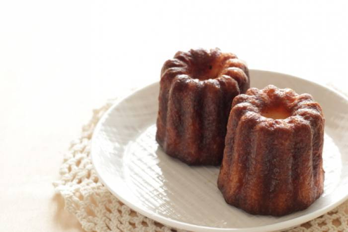

Canelé de Bordeaux

A propos
Le canelé est le symbole par excellence de la ville de Bordeaux.
Il s'agit d'un dérivé de la pâte à crêpe datant du 16ème siècle du temps de Burdigala, additionné de Rhum ambré nécessitant 24 heures de repos pour pouvoir donner tous ses parfums.
En bref
Ingredient
Pour 6 personnes
Préparation
la veille
Porter à ébullition 40 cl de lait, le sucre, la gousse de vanille fendue et grattée, et le beurre demi-sel.
Hors du feu, ajouter les 10 cl de lait restant et le rhum.
Faire un puit avec la farine, ajouter les jaunes d'oeufs et les oeufs entiers, puis mélanger rapidement à l'aide d'un fouet (le mélange ne doit pas être homogène).
Incorporer alors le lait tiède petit à petit (84 °C).
Passer ensuite le mélange au chinois si nécessaire et le laisser reposer au minimum 24h.
Le jour même
Préchauffer le four à 230 °C (th. 8).
Graisser légèrement les moules avec le beurre doux fondu.
Verser l'appareil aux 4/5 des empreintes du moule
cuire 6 min à 230 °C
Baisser ensuite à 160 °C pendant 1h 15 min.